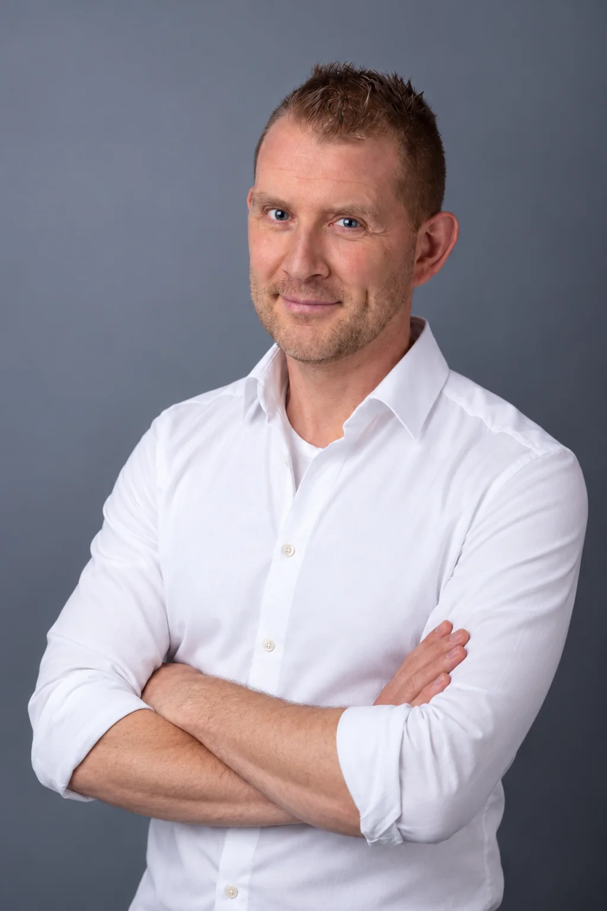

Geen financiering?
Een goed idee, maar ontbreekt de financiering? Ik help kansen te vinden en te benutten.
Bekijk de mogelijkheden →Fondsen zoeken
Ik breng passende fondsen, subsidies en partners in beeld voor uw initiatief.
Hoe ik dat aanpak →Hulp nodig?
Van strategie en aanvraag tot verantwoording. Ik ondersteun en neem werk uit handen.
Neem contact op →
Betekenisvolle projecten verder brengen.
Ik ben Joris van Schilt, zelfstandig fondsenwerver en subsidieadviseur. Met een scherp oog voor kansen, een praktische aanpak en kennis van de non-profitsector help ik organisaties om plannen te realiseren.
Mijn ervaring ligt sterk in zorg en welzijn, maar mijn werk is nadrukkelijk breder: ook kunst en cultuur, natuur, sport en andere maatschappelijke initiatieven.
Bekijk mijn registratie →
Voor maatschappelijke impact in uiteenlopende sectoren.

Van idee naar passende fondsen en subsidies.
Geen standaardpakket, maar ondersteuning die past bij uw organisatie, project en financieringsvraag.
Fondsenwerving
Fondsenstrategie, fondsenscan en gerichte werving bij vermogensfondsen.
Subsidieadvies
Passende regelingen vinden en aanvragen helder en overtuigend uitwerken.
Nalatenschappen
Strategie en begeleiding bij het opzetten of versterken van nalatenschappenwerving.
Vriendenstichtingen
Opzetten, professionaliseren en activeren van vriendenstichtingen.
Duidelijk van begin tot eind.
U weet vooraf wat ik doe, welke informatie nodig is en welke route we volgen.
Kennismaken
Project, doel en financieringsvraag.
Strategie
De meest kansrijke route bepalen.
Voorbereiden
Inhoud, begroting en bewijsvoering.
Aanvragen
Schrijven, indienen en opvolgen.
Verantwoorden
Resultaten helder terugkoppelen.
Heldere afspraken vooraf.
Per opdracht
Voor een complete aanvraag, fondsenscan of afgebakend traject. Een vaste prijs is mogelijk.
Per uur
Voor advies, meelezen, aanscherpen of tijdelijke ondersteuning. Flexibel en transparant.
Wilt u weten welke financieringskansen er zijn?
Ik kijk graag mee naar uw project en de mogelijke route.
Samen kijken naar uw project?
Bel, WhatsApp of stuur een bericht. Ik bespreek graag vrijblijvend of fondsenwerving kansrijk is.
Joris van Schilt
06 28 26 13 12
joris20@hotmail.com
Geregistreerd Fondsenwerver
Bekijk mijn registratie →